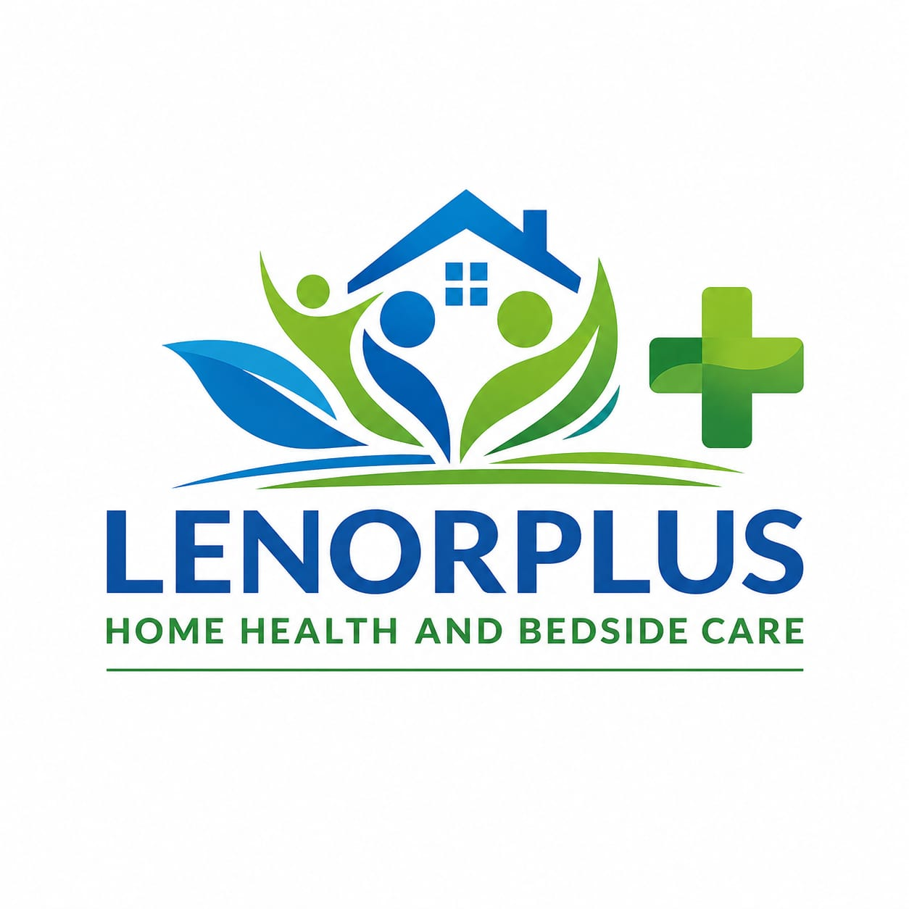

Support for emotional wellbeing and behavioral challenges
Our mental health services for children and adolescents provide compassionate, home-based support for young people experiencing emotional challenges.